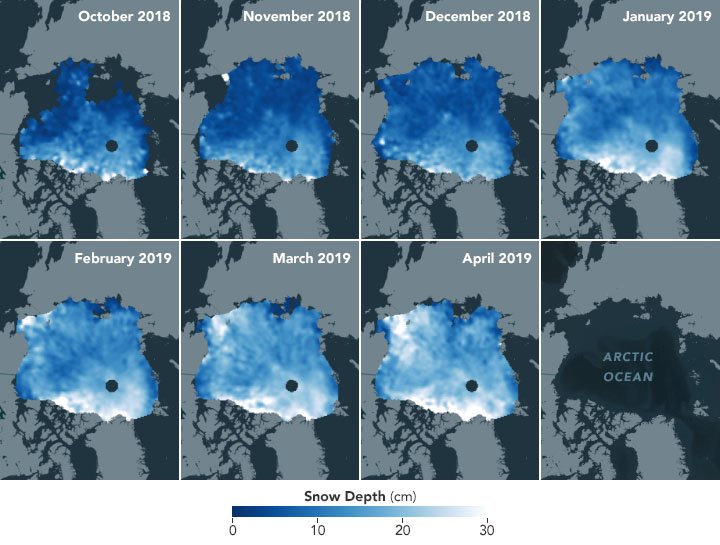
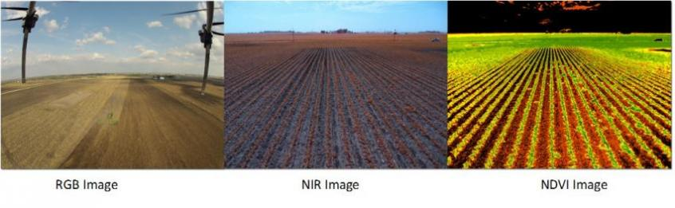

I have experience in time series analysis, land cover classification, and image interpretation with a variety of multi spectral sensors. I have conducted several research projects using GIS and have a background in climate change data analysis.
I have experience working on a number of projects using different remote sensing technologies. These include unmanned aerial systems (UAS), photogrammetry, LiDAR, underwater acoustics, and satellite imagery along with ground control surveys.
Some projects I have worked on include creating Global Time-Series Climate Maps where climate variables carbon monoxide, chlorophyll and aerosol size were mapped as function of time. Furthermore I have utilized Lidar and spectrometers to calculate the depth of snowpack in the Artic.
I enjoy mapping soil types for agricultural planning. I have assisted farmers to quantify crop conditions through the use of NDVI (Normalized Difference Vegetation Index) as well as monitored surface water for their crops.
I have been apart of a team conducting Natural Disaster Hazard Analysis. Pipeline leak detection utilizing high-resolution satellite imagery was a key component of this project as well as studying the extent to which buildings were damaged due to flooding.
